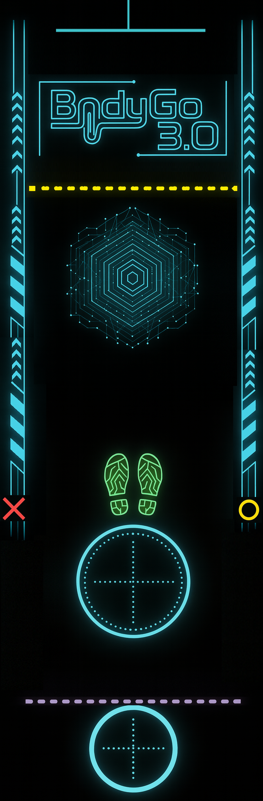

AI Science-based Fitness Assessment System
AI 智慧視覺 · 精準量測 · 專業報告 · 一站式科技體適能評估
⭐ Core Features | 核心功能
AI 姿態辨識
即時骨架追蹤
自動計次與姿態評估
BLE 智慧設備
握力計、心率帶
距離感測、量測尺
3D 深度感測
深度相機
精準空間量測
專業報告
A4 PDF 雷達圖
排名 + 運動建議
語音引導
TTS 語音指令
長者友善操作
雲端整合
CIAM 身份驗證
跨裝置安全存取
📋 Assessment | 評估類別

成人體適能
Adult · 6
Adult · 6

銀髮體適能
Senior · 7
Senior · 7

跌倒風險
Fall · 7
Fall · 7

SPPB
3 items
3 items
📶 System Hardware & BLE Peripherals | 系統設備與智慧週邊

Machine

Test Mat

Grip Meter

HR Monitor

Distance

Health Tape
主機與 AI 相機整合模組，專用防滑地墊便於使用者引導定位站立與檢測，搭配 BLE 周邊與智能分析系統，提供穩定的測試流程。
📐 使用空間：寬 1500mm × 長 4750mm
📝 Test Items | 評估項目明細
成人體適能 Adult (6)
| 心肺適能 | 3 分鐘登階測試，記錄運動後心率恢復 |
| 反應力 | 視覺刺激反應計時，評估神經肌肉速度 |
| 手握力 | BLE 握力計量測，左右手各 2 次取最佳 |
| 肌耐力 | 1 分鐘仰臥起坐，AI 自動計次 |
| 柔軟度 | 坐姿體前彎，距離感測器精準量測 |
| 閉眼單腳平衡 | AI 姿態偵測計時，自動判定結束 |
銀髮體適能 Senior (7)
| 下肢肌耐力 | 30 秒坐站，AI 自動計次 |
| 上肢肌耐力 | 30 秒手臂彎舉，AI 自動計次 |
| 心肺適能 | 2 分鐘原地踏步，AI 偵測抬腿 |
| 下肢柔軟度 | 椅上坐姿前彎，感測器量測距離 |
| 上肢柔軟度 | 抓背測試，智慧量測尺量測距離 |
| 2.44m 折返走 | AI 計時行走，評估動態平衡步態 |
| 手握力 | BLE 握力計量測，評估上肢力量 |
跌倒風險 Fall Risk (7)
| 3m 折返走 | AI 計時步態分析，含轉身穩定度 |
| 手握力 | BLE 握力計量測，評估肌少風險 |
| 開眼平衡 | AI 姿態偵測，站立穩定度計時 |
| 功能前伸 | 距離感測器量測前伸幅度 |
| 5 次坐站 | AI 計次計時，評估下肢爆發力 |
| 小腿圍 | BLE 量測尺，肌肉量篩檢指標 |
| 衰弱前期評估 | 5 題結構化問卷，綜合衰弱風險 |
SPPB 評估 (3)
| 平衡測試 | AI 偵測閉足/半腳/全腳跟三階段 |
| 4m 行走 | AI 步速分析，自動計算行走速度 |
| 5 次坐站 | AI 計次計時，評估起立能力 |
📑 Report | 評估報告

P.1 總覽 Overview

P.2 詳細 Details
📈多維雷達圖
Radar Chart
Radar Chart
📊百分位排名
Percentile PR
Percentile PR
🏋個人化運動建議
Exercise Advice
Exercise Advice
🖨A4 PDF 匯出
PDF Export
PDF Export
🏛
導入國民健康署體適能常模資料庫，採用回歸演算法依年齡、性別推算個人百分位排名 (PR) 與體適能等級
Based on National Health Administration norms with regression algorithms for personalized PR scoring
🔄 Workflow | 評估流程
1
建立個案
Profile
▶
2
選擇評估
Select
▶
3
AI 測試
Assess
▶
4
產出報告
Report